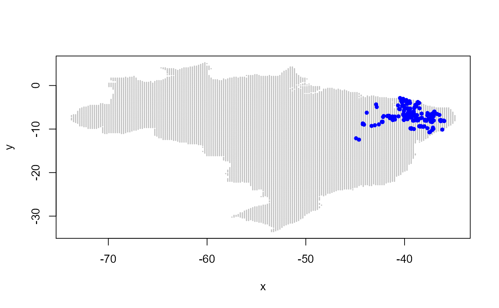

sHe.RdEstimate spatial gene diversity (expected heterozygozity - He) through the individual-centred approach by Manel et al. (2007).
sHe() calculates the unbiased estimate of He based on the information of allele frequency obtained from codominant or
dominant markers in individuals within a circular moving windows of known radius over the sampling area.
sHe(x, coord.cols = 1:2, marker.cols = 3:4, marker.type = c("codominant", "dominant"), grid = NULL, latlong2km = TRUE, radius, nmin = NULL)
| x | a data frame or numeric matrix containing columns with coordinates of individuals and marker genotyping |
|---|---|
| coord.cols | a vector of integer giving the columns of coordinates in |
| marker.cols | a vector of integer giving the columns of markers in |
| marker.type | a character; the type of molecular marker |
| grid | optional; a two-column matrix containing coordinates over which to predict He |
| latlong2km | logical; should coordinates be converted from lat/long format into kilometer-grid based? |
| radius | the radius of the moving window. It must be in the same format as sampling coordinates |
| nmin | optional; a numeric value indicating the minimum number of individuals used to calculate He. If is
the number of individuals in a certain location is less then |
The unbiased estimate of expected heterogygozity (Nei, 1978) is given by:
$$ He = (1 - \sum_{i=1}^{n} p_{i}^{2}) \frac{2n}{2n - 1} $$
where \(p_{i}\) is the frequency of the i-th allele per locus considering the \(n\) individuals in a certain location.
A list of
a data frame with the following columns: coord.x - the x-axis coordinates of the predicion grid, coord.y - the y-axis coordinates of the predicion grid, n - the number of individuals in a certain points in the grid, MaxDist - the maximum observed distance among these individuals, uHe - the unbiased estimate of gene diversity (as expressed above), and SE - the standard error of uHe.
a matrix containing the estimates of He for every marker, on each point of the grid.
a numeric matrix containing the sampling coordinates, as provides as input.
da Silva, A.R.; Malafaia, G.; Menezes, I.P.P. (2017) biotools: an R function to predict spatial gene diversity via an individual-based approach. Genetics and Molecular Research, 16: gmr16029655.
Manel, S., Berthoud, F., Bellemain, E., Gaudeul, M., Luikart, G., Swenson, J.E., Waits, L.P., Taberlet, P.; Intrabiodiv Consortium. (2007) A new individual-based spatial approach for identifying genetic discontinuities in natural populations. Molecular Ecology, 16:2031-2043.
Nei, M. (1978) Estimation of average heterozygozity and genetic distance from a small number of individuals. Genetics, 89: 583-590.
Anderson Rodrigo da Silva <anderson.agro@hotmail.com>
Ivandilson Pessoa Pinto de Menezes <ivan.menezes@ifgoiano.edu.br>
Depending on the dimension of x and/or grid, sHe() can be time demanding.
levelplot
# using a retangular grid (not passed as input!) # ex <- sHe(x = moco, coord.cols = 1:2, # marker.cols = 3:20, marker.type = "codominant", # grid = NULL, radius = 150) #ex # plot(ex, xlab = "Lon", ylab = "Lat") # A FANCIER PLOT... # using Brazil's coordinates as prediction grid # ex2 <- sHe(x = moco, coord.cols = 1:2, # marker.cols = 3:20, marker.type = "codominant", # grid = brazil, radius = 150) # ex2 # # library(maps) # borders <- data.frame(x = map("world", "brazil")$x, # y = map("world", "brazil")$y) # # library(latticeExtra) # plot(ex2, xlab = "Lon", ylab = "Lat", # xlim = c(-75, -30), ylim = c(-35, 10), aspect = "iso") + # latticeExtra::as.layer(xyplot(y ~ x, data = borders, type = "l")) + # latticeExtra::as.layer(xyplot(Lat ~ Lon, data = moco)) # End (not run)